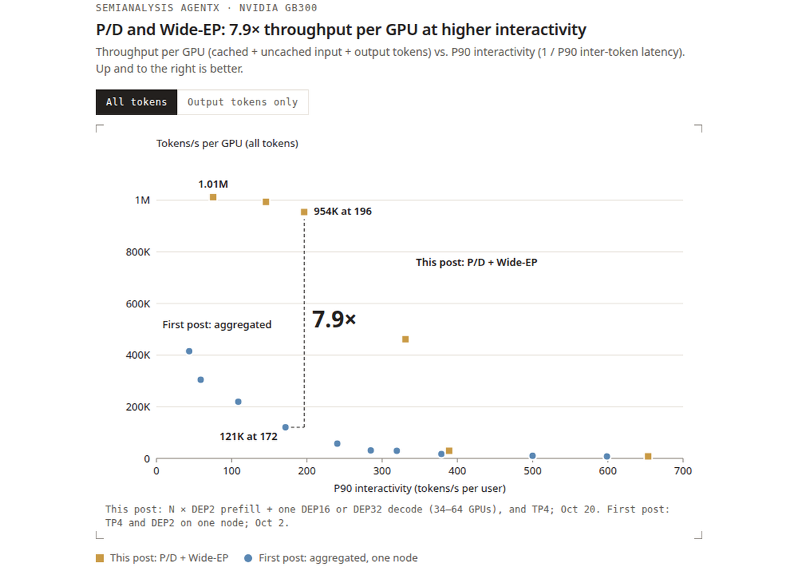
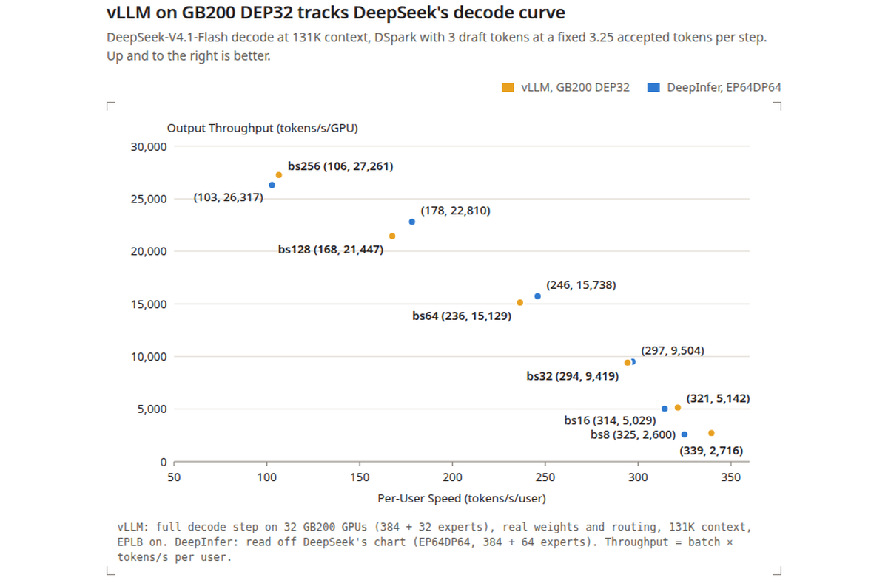
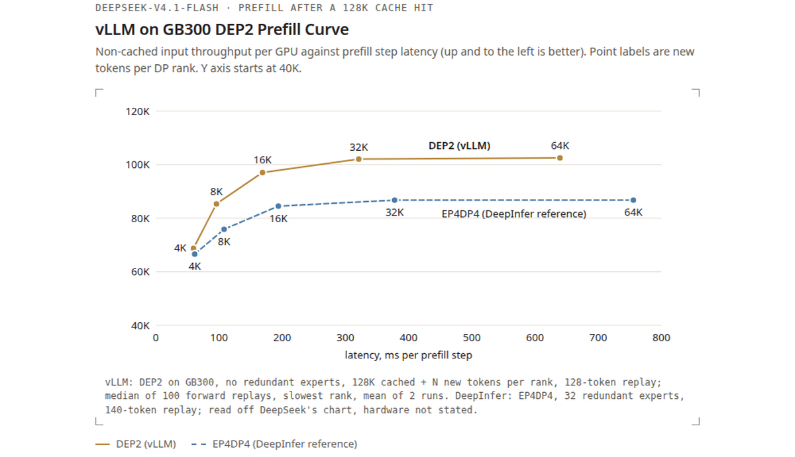
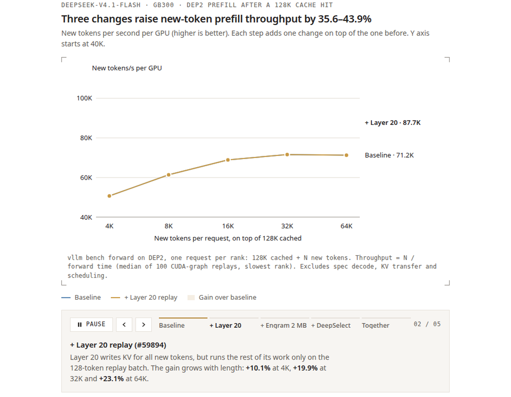
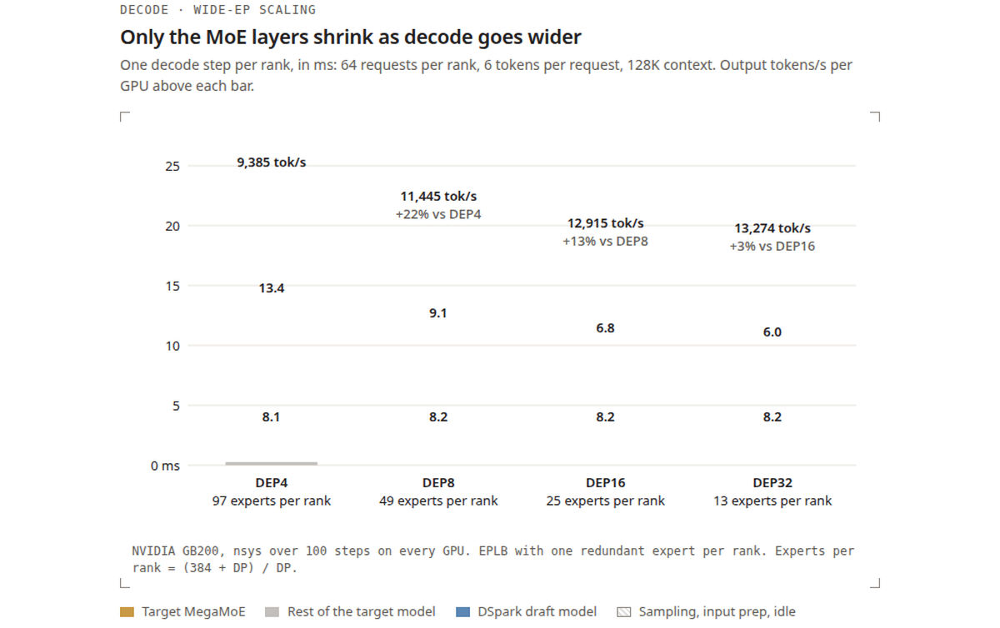
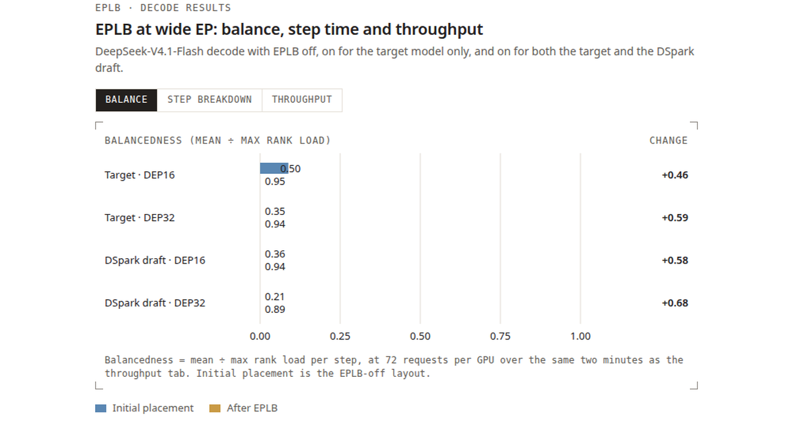
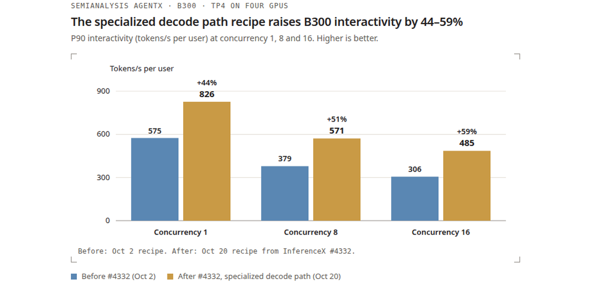

一台NVIDIA GB300 NVL72机架上，vLLM用P/D分离与Wide-EP跑DeepSeek-V4.1-Flash，在SemiAnalysis AgentX上做到单卡954K tokens/s，P90交互性为每用户196 tokens/s，相对首篇单节点结果提升7.9倍，每GPU小时成本38.96美元。单用户专用解码路径达到826 tokens/s。对标DeepSeek自家引擎DeepInfer，解码差距在6% 以内，Prefill曲线贴合。
一台NVIDIA GB300 NVL72机架上，vLLM用P/D分离与Wide-EP服务DeepSeek-V4.1-Flash，在SemiAnalysis AgentX上达到单卡954K tokens/s，P90交互性为每用户196 tokens/s。这个数字统计了缓存输入、未缓存输入与输出token，相对首篇单节点结果提升7.9倍，每GPU小时成本按DeepSeek非高峰价格折算为38.96美元。

DeepInfer是DeepSeek自家面向DeepSeek-V4.1-Flash的推理引擎，本周以离线引擎形态发布，同时公开了Prefill与解码曲线。作为同一模型最相关的参照系，先把vLLM的位置标定清楚，再展开优化细节。
解码方面，在DeepSeek的解码配置下（131K上下文，每步3个草稿token），GB200上vLLM的单卡解码吞吐在批量8到256的范围内，与DeepInfer公开结果的差距在6% 以内。

Prefill方面，DeepInfer公开曲线采用EP4DP4、32个冗余专家、140 token有界重放，硬件配置没有说明，数值从其说明文档的图表中读取。vLLM一侧采用GB300上DEP2、无冗余专家、128 token重放与自有提示词。两边配置不同，曲线之间的差距不能直接读成引擎之间的加速比，能成立的结论是vLLM的DEP2 Prefill在DeepInfer公开的范围内贴合其曲线。

两个引擎接近有同源背景：DeepInfer最初基于vLLM构建，vLLM则持续集成DeepSeek开源库中的内核，包括MegaAttn、MegaMoE与Mega-mHC，并在周围做了大量栈级优化。区别在于定位：DeepInfer面向单个模型与离线模式，同一套vLLM构建同时支持在线P/D分离与Wide-EP，跑满整台NVL72机架，后续章节测量的就是这套在线配置。
调优之前，先把DeepSeek-V4.1-Flash的架构特性量化清楚，三个结论直接决定后续优化方向。
下表是DEP32、每rank 16请求、每请求6个token（1个正式token加5个DSpark草稿token）、全部请求取相同上下文长度时，GB300上目标模型的前向时间。上下文从128K扩大到855K，相当于6.7倍，目标模型解码延迟只增加0.6毫秒，增幅7%。
| 每请求上下文 | 64K | 128K | 256K | 512K | 855K |
|---|---|---|---|---|---|
| 目标模型前向时间（毫秒） | 8.86 | 8.93 | 9.03 | 9.25 | 9.53 |
| 相对128K | -0.8% | 基准 | +1.1% | +3.6% | +6.7% |
测量要回答两个问题：一次Prefill或解码步本身应该花多少时间，DP与EP失衡又额外增加了多少开销。
小DEP实例对Prefill有吸引力，实测也支持这个判断。AgentX纯Prefill运行、并发256时，DEP4的单卡吞吐只有DEP2的83%，即53.3K tokens/s对64.4K tokens/s。关闭前缀缓存的镜像与滞后重放指向DP失衡：各rank步调错开后，DEP4损失13.6% 的吞吐，DEP2只损失5.9%。DEP2因此成为默认选择。
更干净的轨迹还暴露了随上下文长度增长的剩余瓶颈。两张GB300卡上，8K token的Prefill在无历史上下文时耗时87.9毫秒，有512K缓存上下文时耗时189.4毫秒。针对这个区间，三项改动陆续落地。
第一，层20重放补齐。有界重放已经把第21到39层限制在最近128个token，此前第20层仍对全部新增token做索引计算。改动后，第20层为全部新增token写KV，但其余计算只跑128 token的重放批量。32K新增token时Prefill吞吐提升19.9%，增益从4K时的10.1% 增长到64K时的23.1%。
第二，Engram页面放大。Engram从各DP rank共享的主机表做随机读取，此前的主机共享内存映射用64KB GPU页面，GPU TLB缺失频繁。把表移到主机NUMA感知的显存分配上，启用2MB GPU页面，32K新增token时Prefill吞吐再提升2.8%。
第三，Prefill索引改用DeepSelect排序候选块，与解码路径一致。收益随参与排序的键数量增长，32K新增token时提升15.6%，64K时提升15.2%。
三项合计，在128K缓存前缀之上，新增token的Prefill吞吐在4K到64K范围内提升35.6% 到43.9%。32K时合计增益42.5%，64K时单卡吞吐从71.2K tokens/s上升到102.5K tokens/s，增幅43.9%。

| 单实例Prefill吞吐（tokens/s） | 镜像（均衡） | 滞后（失衡） | 损失 |
|---|---|---|---|
| DEP2 | 138.7K | 130.5K | 5.9% |
| DEP4 | 267.6K | 231.1K | 13.6% |
解码一侧，Wide-EP与EPLB是已有实践，vLLM很早就支持两者，新发现集中在扩展规律与实测经验。DEP4扩展到DEP32、每GPU 64请求、128K上下文时，目标模型MegaMoE时间从13.4毫秒下降到6.0毫秒，因为每个rank持有的专家变少，其余工作维持在10毫秒左右。单卡吞吐增益因此逐渐收窄，到DEP32时草稿模型的通信开销也开始抵消更宽并行的好处。

EPLB每3000步按过去1000步的负载重排一次专家。均衡度从目标模型的0.35提升到0.94，草稿模型从0.21提升到0.89，分别追回了与均匀路由之间差距的约97% 与约93%。

两项改动让这个机制真正可用。一是基于NVLink的对称内存后端，在不停止解码的情况下不到1秒完成DEP32全量重平衡，把EPLB的副本映射与负载记录融合进MegaMoE内核（每步节省约0.2毫秒），并去掉了解码循环里的主机同步。二是支持目标模型与草稿模型异构的EPLB：DSpark草稿模型有128个路由专家、每token选3个，目标模型有384个路由专家、每token选6个，EPLB为两个模型分别跟踪专家位置与负载并分别重平衡。
Wide-EP解码要求全部rank在每一层同步，一个掉队的rank就会拖住整个实例。异步调度在小规模下能较好隐藏CPU开销，规模扩大后难度来自两方面：GPU单步变短，留给CPU工作的余量变小；同时某个rank掉队的概率变高。实测中，未优化的DEP32反而慢于DEP16，单步17.57毫秒对13.84毫秒，尽管前者的GPU执行时间还快1.1毫秒。下表按影响大小列出找到的全部原因，每行来自不同配置，各自说明配置。
四项修复合起来，让大规模解码的CPU开销不再成为瓶颈，也为P/D分离与Wide-EP在整机架上的结果扫清了道路。
| 原因 | 修复 | 效果 | 配置 |
|---|---|---|---|
| KV读取在解码工作线程上同步提交 | NIXL推送加UCX散集，打包后的KV行作为单个NIXL区域发送 | 单卡141K上升到440K tokens/s，P90从约40上升到159 tokens/s每用户 | GB300，8P1D，并发3072 |
| Gloo规约延迟随rank数线性增长 | 递归倍增CPU规约 | DP同步从每步10.8毫秒下降到1.5毫秒，单步从16.10毫秒下降到13.15毫秒 | DEP32解码 |
| 准入突发：单步最多准入140个请求 | 可选上限：每步最多4次新KV加载 | 单卡460K上升到516K tokens/s，P90从109上升到153 tokens/s每用户 | GB300，7P1D，并发4800，含另外两项CPU修复 |
| 准入工作量随提示词长度增长 | 提示词作为单个int32缓冲，跳过滑动窗口块表的空块，分块提示词拷贝内核 | 855K提示词：每次准入CPU时间从38.8毫秒下降到6.0毫秒 | 引擎微基准 |
低延迟内核支持也扩展到了DeepSeek-V4.1-Flash，延续了首篇的工作。在真实AgentX会话上，专用解码路径在4张B300、TP4配置下为单用户做到P90826 tokens/s，高于标准解码路径的575 tokens/s，增幅44%。
并发8时，专用路径为571 tokens/s，高于标准路径的379 tokens/s，增幅51%；并发16时为485 tokens/s，高于标准路径的306 tokens/s，增幅59%。小批量场景下，专用路径的收益覆盖了全部三个并发点。

参考：https://vllm.ai/blog/2026-10-23-deepseek-v41-flash-pd-wide-ep